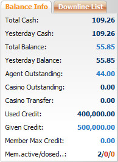
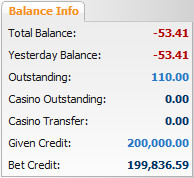

Balance Info
Definition:
This is overall report that helps master well-informed with his/her agents and members current balance, win/loss amount, paid or received amount.

Balance Info
Term definition:
-
Total Cash: Current total agent win/lost amount including transfer transactions.
-
Yesterday Cash: total agent win/lost amount till yesterday.
-
Total Balance: total paid or received amount that Agent needs to settle with upline.
-
Yesterday Balance: total paid or received amount that Agent needs to settle with upline till yesterday.
-
Agent Outstanding: total agent’s share from member stakes based on his/her position taking on running/waiting tickets.
-
Casino Outstanding: total member stake on unfinished Casino games (This value only appears when member transfers back money to Sportsbook).
-
Casino Transfer: total amount which was transferred from Sportsbook to
Casino.
-
Used Credit: Total amount of credit agent gave to his/her members.
-
Given Credit: amount of credit master gives to agent.
-
Member Max Credit: maximum amount of given credit that agent can give to each member.
-
Member active/closed/suspended: the number of members which are active/closed/suspended.
Note:
This section also support master to perform the transfer action, view running tickets, edit given credit and edit member maximum credit as follows:
- To perform a transfer transaction, click on Yesterday Balance amount.
- To view all running tickets, click on Outstanding amount.
- To edit given credit, click on Given Credit amount.
- To edit member maximum credit, click on Member Max Credit amount.
How to view Balance Information of downline.
To view balance information of downline, click on "Downline List" then select the username, information will be shown as below:

Member's Balance Info
Term definition:
-
Total Balance: total win/loss of member.
-
Yesterday Balance: total win/loss of member till yesterday.
-
Outstanding: total member stake on running/waiting tickets.
-
Casino Outstanding: total member stake on unfinished Casino games (This value only appears when member transfers back money to Sportsbook).
-
Casino Transfer: total amount which was transferred from Sportsbook to Casino by member.
-
Given Credit: initially amount of credit agent gives to member.
-
Bet Credit: available credit that member can be able to place bet.